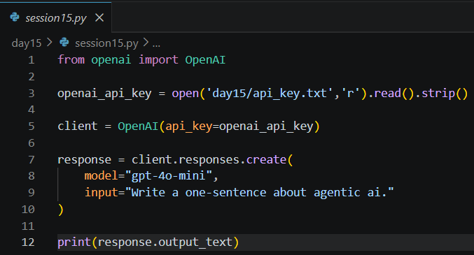
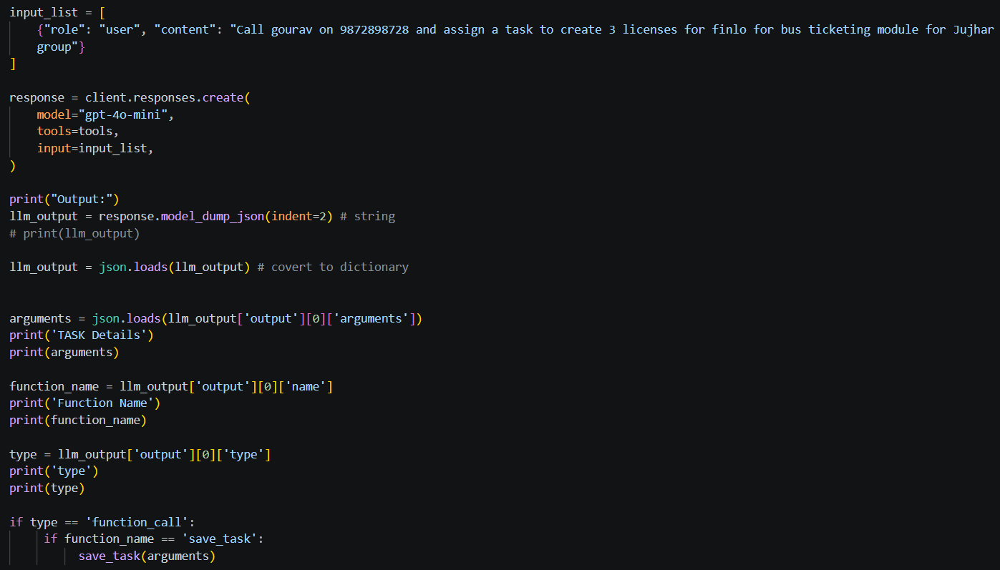
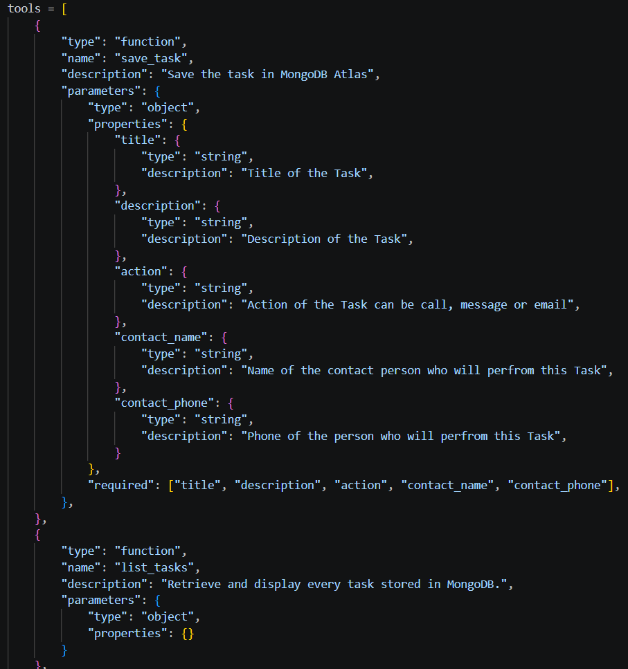
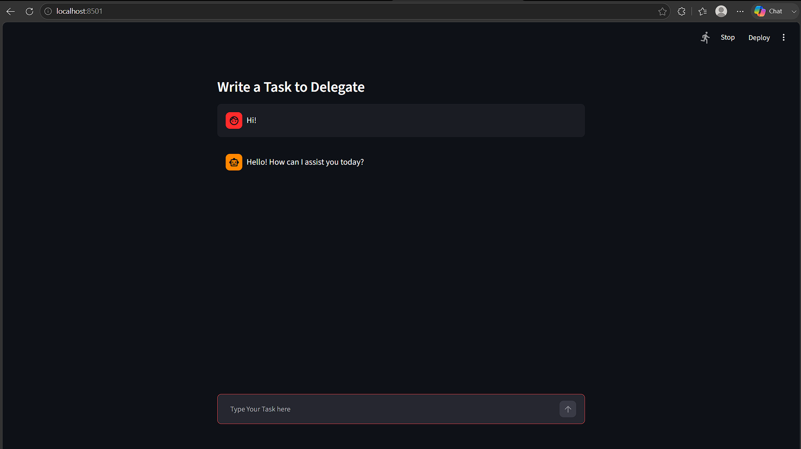
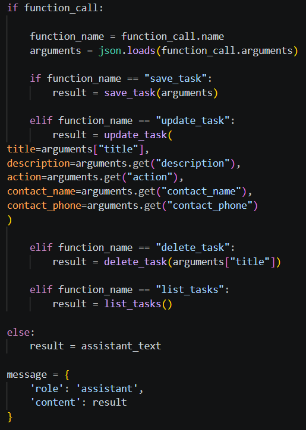
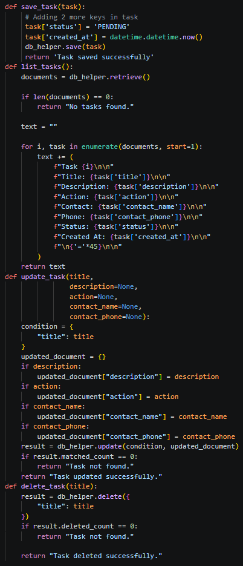
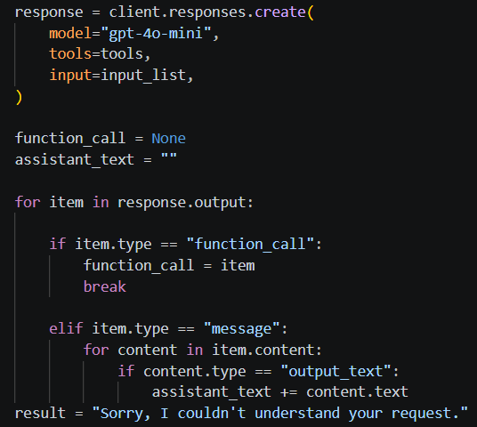

Date: 15th July 2026
Duration: 2 Hours
Training Company: Auribises Technologies
Trainer: Ishant Kumar
Day 15 marked one of the biggest milestones of the training as we transformed our rule-based chat application into an AI-powered Agentic Assistant using the OpenAI Responses API. Instead of manually checking user commands with multiple conditional statements, we allowed a Large Language Model (LLM) to understand natural language, decide which backend function should be executed, and automatically provide the required arguments.
The session introduced OpenAI's Function Calling feature (Tools), enabling our application to intelligently connect AI-generated decisions with Python functions responsible for interacting with MongoDB. This significantly improved the flexibility and scalability of the project.
We began by learning how to interact with OpenAI models using the official Python SDK. After securely
loading the API key, we created an OpenAI client and generated responses using the
client.responses.create() method with the gpt-4o-mini model.
This simple exercise demonstrated how Large Language Models can understand prompts and generate meaningful responses, laying the foundation for integrating AI capabilities into our applications.

The most important concept introduced during this session was Function Calling. Instead of asking the model to directly generate text, we described the Python functions that our application could perform, including their names, descriptions, and required parameters.
When the user entered a request, the language model analyzed the instruction and selected the most appropriate function to execute, automatically generating all required arguments in JSON format. This eliminated the need for manual command parsing and made the application significantly more intelligent.

Each backend operation—including creating, listing, updating, and deleting tasks—was represented as a callable tool. Every tool contained a detailed schema describing the expected input parameters, allowing the language model to correctly identify which function should be invoked based on the user's request.
This architecture closely resembles modern AI agents, where an LLM acts as the decision-making component while Python functions perform real-world operations such as database interactions.

After understanding Function Calling, we integrated the OpenAI model into our existing Streamlit application. Instead of manually identifying commands such as "create task" or "delete task", every user message was sent directly to the language model. The model analyzed the user's intent and decided whether a backend function needed to be executed or if a normal conversational response should be returned.
This significantly simplified the application logic while making the chatbot much more flexible. Users could now communicate naturally instead of following a fixed command format.

When the language model selected a function, the application extracted both the function name and its
generated arguments from the API response. These arguments were converted from JSON into Python dictionaries
before invoking the corresponding backend function such as save_task(),
list_tasks(), update_task(), or delete_task().
Each function interacted with MongoDB through the reusable DBHelper class, allowing the AI assistant to manage tasks without any manual parsing of user input.

The application was expanded to support all CRUD operations through AI-powered function calls. Whether the user wanted to create a new task, retrieve existing tasks, update specific task details, or delete a completed task, the language model automatically selected the appropriate backend function and supplied the required parameters.
This demonstrated how an LLM can act as an intelligent decision-making layer while Python functions perform the actual business logic and database operations.

The class activity involved upgrading the Day 14 Agentic Chat UI into an AI-powered assistant using the OpenAI Responses API. We replaced manual command parsing with Function Calling, allowing the chatbot to understand natural language instructions and execute Python functions automatically. The application then displayed the results back to the user inside the Streamlit chat interface.
Another important exercise involved inspecting the API response structure to understand how the model returns function names, arguments, normal messages, and output types. This helped us understand how AI applications communicate with backend services.

No separate assignment was given during this session. The primary objective was to successfully integrate OpenAI Function Calling into the existing Agentic Chat application and ensure that all CRUD operations could be executed through natural language interactions using the AI model.
Responses API processes prompts and generates AI-powered responses.Day 15 was one of the most significant sessions of the entire training because it transformed our chatbot from a rule-based application into an AI-powered assistant. Until this point, the application relied on manually checking user commands, but integrating the OpenAI Responses API allowed the language model to understand requests in natural language and determine the correct backend function automatically.
Learning about Function Calling completely changed my understanding of how modern AI applications are built. Instead of generating only conversational responses, the model became capable of interacting with external systems by invoking Python functions with structured arguments. Watching the AI create, retrieve, update, and delete MongoDB records through backend functions made the project feel much closer to real-world AI assistants.
This session also highlighted the importance of designing clear tool schemas and reusable backend functions. Separating the AI's decision-making process from the application's business logic made the project cleaner, more scalable, and easier to maintain. Overall, Day 15 provided valuable insight into how Large Language Models can be integrated into software applications to build intelligent, action-oriented systems rather than simple chatbots.
The next session will continue enhancing the Agentic AI assistant by introducing more advanced capabilities, enabling the application to perform increasingly complex tasks through intelligent reasoning and deeper integration between the language model and backend services.